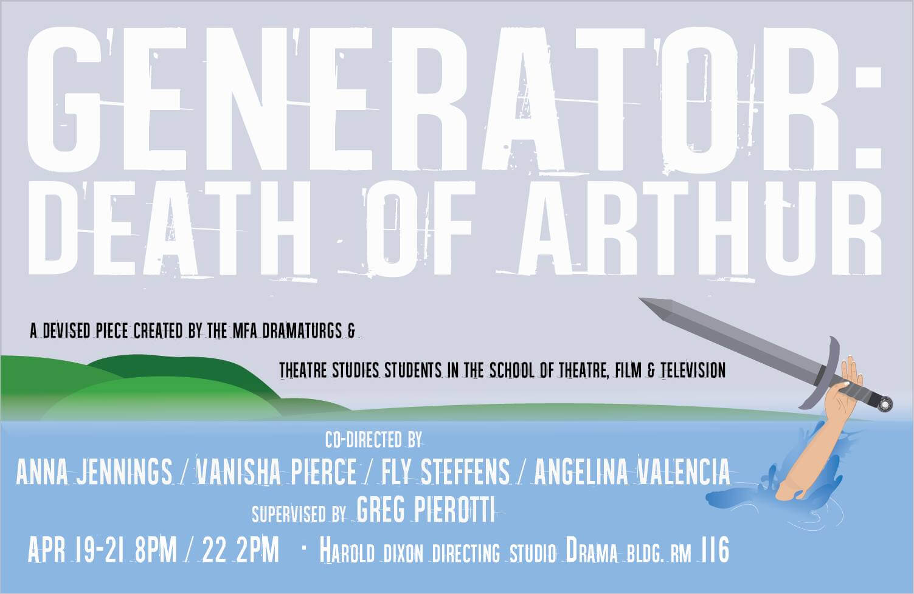
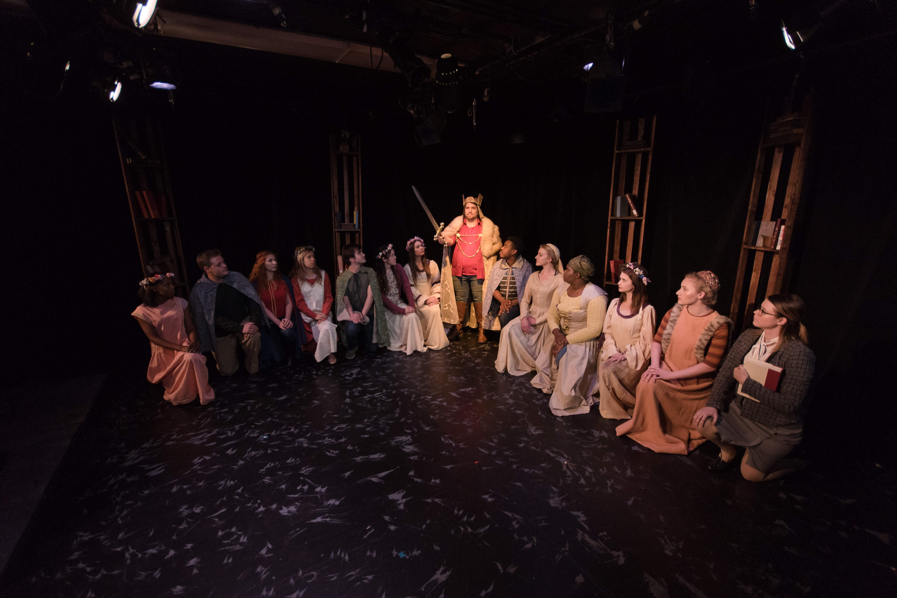
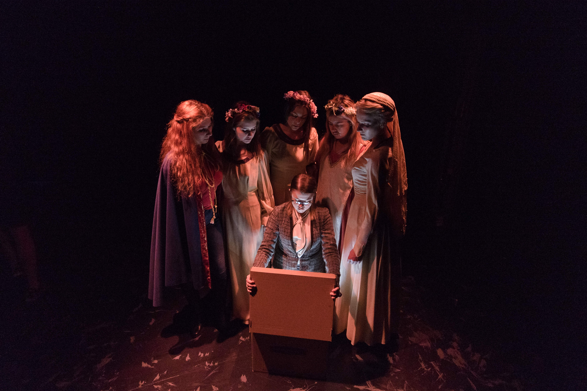
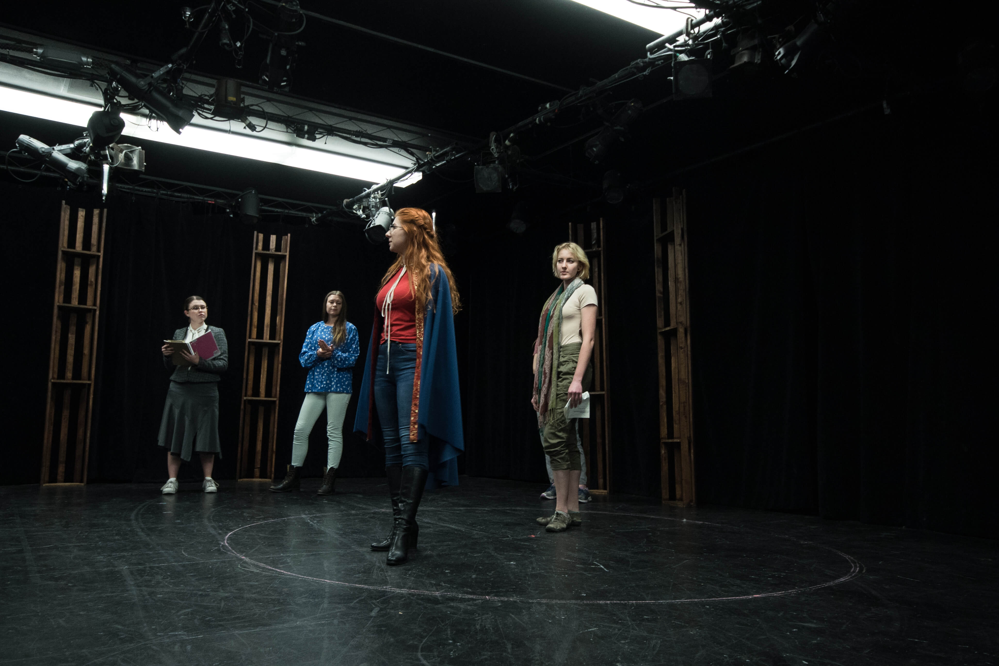

The Death of Arthur
Co-director, writer, & dramaturg
I find Arthurian Legends fascinating in their rhizomatic and ever-changing nature. I initially proposed this idea because I thought that the breadth of characters and stories would allow us many different options for theatricalization. My interest in feminist revision on existing texts drove my artistic vision in this devised project.

Generator: The Death of Arthur was a devised performance created collaboratively over a six-week process using the Moment Work devising technique created Greg Pierotti and the Tectonic Theatre Project. The artistic team included four co-director/writers/dramaturgs—Fly Steffens, Vanisha Pierce, Angelina Valencia, and myself—under the supervision of Greg Pierotti who also functioned as a director/writer/dramaturg.
Normally, the devising process spans years, but we accomplished a miniature, compressed version culminating in a work-in-progress performance based on Arthurian Legends. While adaptations of Arthurian Legends abound in film and literature, theatrical adaptations are surprisingly rare. As a source in the public domain, the Legends’ structure, scope, and tradition of adaptation through various philosophical and historical lenses makes it an excellent source for adaptation and devising.
Check out our process: here.

PRODUCTION PHOTOS


